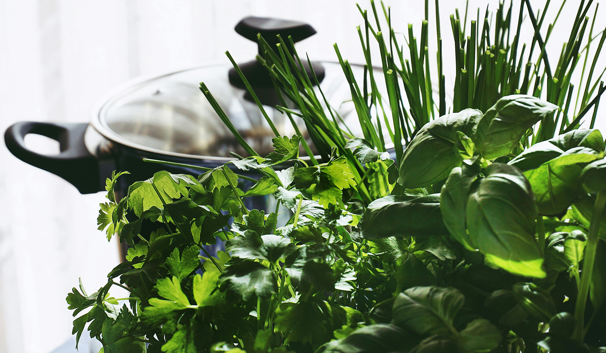

Carrots — compact varieties thrive in deep potsLettuce — cut-and-come-again, salads on demandTomatoes — bush types suit balconies & patiosKale — hardy, nutrient-dense, cold tolerantChillies — small plant, big flavour payoffMixed herbs — basil, parsley, mint for everyday dishes